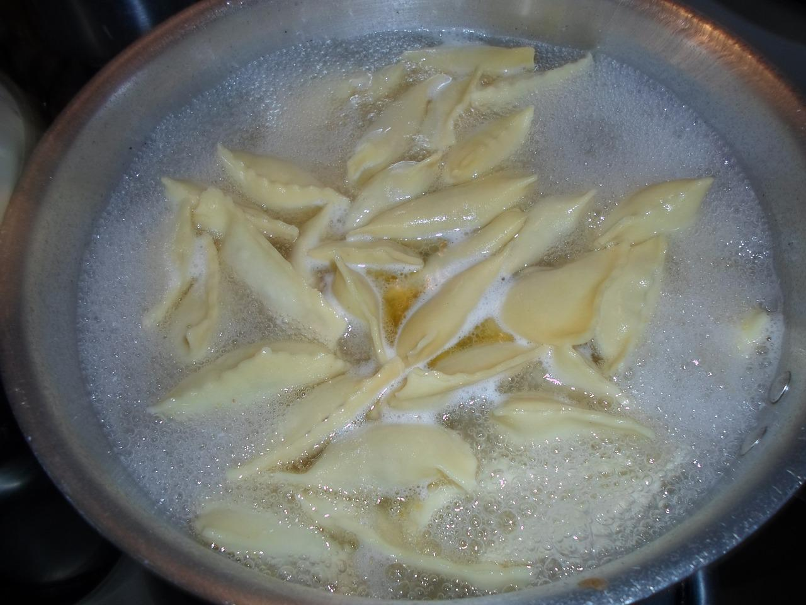

Nasıl Yapılır

Mantıyı güzel bir şekilde yapabilmek için aşağıdaki adımları sırasıyla izleyebilirsiniz:
- Derince bir karıştırma kabına 3,5 su bardağı un , 1 çay kaşığı tuz ekleyelim.Karıştırarak unun ortasına bir çukur açalım.
- Ortasına 1 adet yumurtayı ekleyelim ve karıştırmaya devam edelim.
- Karıştırırken 1 su bardağı ılık suyu yavaş yavaş ekleyelim.
- Hamurun ne çok sert ne de yumuşak olacak bir kıvama gelene kadar yoğuralım.
- Hazır olan hamurun üzerini streç film ile kapatalım ve dinlendirelim.
- Hamur dinlenirken uygun bir karıştırma kabına 250 gram az yağlı kıyma ekleyelim.
- Ardından 1 adet orta boy soğan, yarım çay kaşığı karabiber, 1 çay kaşığı tuz, yarım çay kaşığı pul biber ekleyelim ve güzelce karıştıralım.
- Un serptiğimiz tezgaha hamuru alalım, yoğurarak hamuru toparlayalım. Hamuru 3 eşit parçaya ayıralım.
- Ayırdığımız hamurları bezeler haline getirelim. Un serptiğimiz tezgahta hazırladığımız bezeleri teker teker yufkadan kalın olacak şekilde oklava ile açalım.
- Açtığımız hamuru bir bıçak ile küçük kareler halinde keselim. Kesiğimiz karelerin ortasına hazırladığımız kıyma karışımında ufak parçalar halinde koyalım.
- Hamurun 4 köşesini ortada birleştirerek mantı şeklini verelim. Altını unladığımız bir tepsiye şekil verdiğimiz mantıları toplayalım ve tepsiyi dondurucuya alarak donduralım.
- Dondurucudan aldığımız mantıları koroplast çift kilitli poşetlere koyarak daha sonra pişirmek üzere buzlukta saklayabilirsiniz. Uygun bir tencerede suyu kaynatalım.
- Buzluktan aldığımız mantıları da suya ekleyerek 15-20 dakika kadar pişirelim. Uygun bir sos tavasına 2 yemek kaşığı tereyağı ekleyelim, ardından 2 yemek kaşığı salçayı da ekleyip güzelce karıştıralım.
- Hazırladığımız salçalı sosu pişen mantıların içine ekleyelim ve karıştırarak pişirmeye devam edelim. Pişen mantıları derince bir tabağa alalım üzerine sarımsaklı veya normal yoğurt dökelim. Mantı tarifimiz hazır. Pul biber, nane ve sumak ekleyerek servis edebilirisiniz.